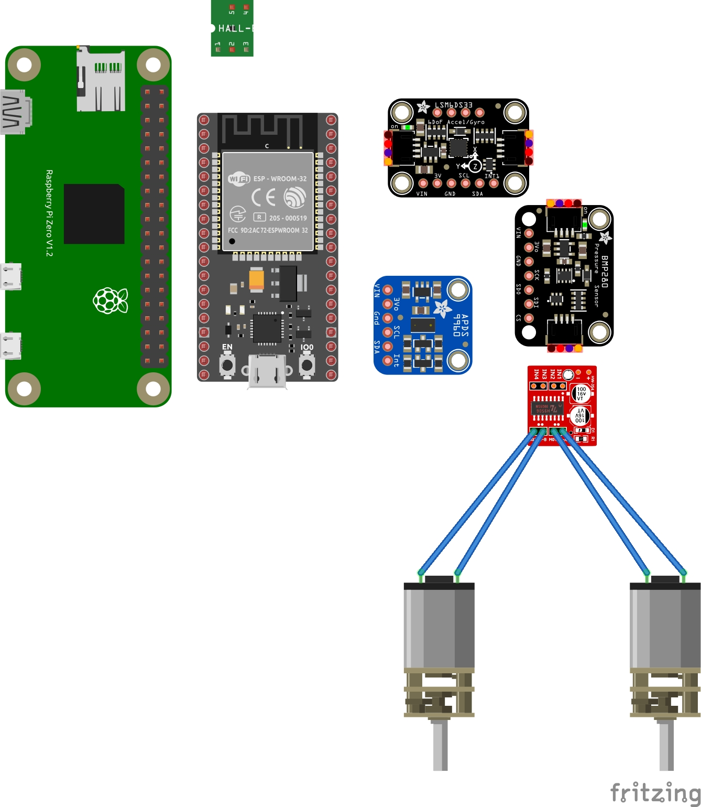
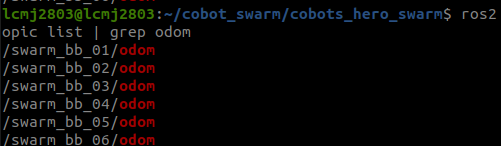
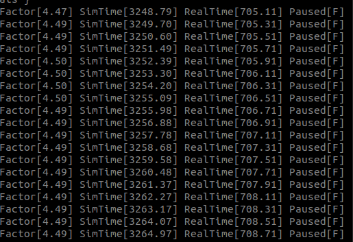
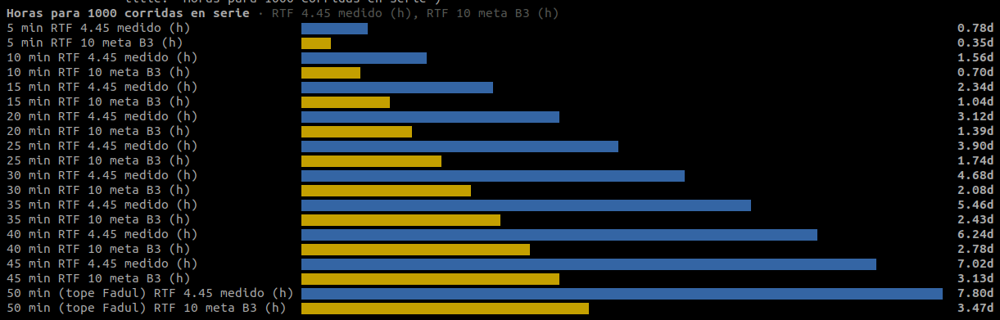
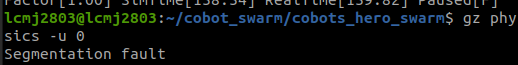

Estación 01 · Robótica · swarm_bb · ROS 2 Humble · lo que ya está hecho
Seis robots diferenciales y un líder. Cada seguidor calcula su punto en la formación, se aleja de los vecinos con un campo de potencial y llega a ese punto con un controlador de uniciclo. Los robots usan ROS 2 por dentro y se comunican entre sí por Zenoh. Abajo está cada pieza terminada, con su código y su resultado.
Desarrollado durante mi pasantía en Cobots Lab. El proyecto sigue en desarrollo.
fritzing/swarm.fzz · swarm_bb_description/urdf/
Parte del diseño HeRoSwarm: una Raspberry Pi Zero corre ROS 2 y el puente Zenoh, y un ESP32 controla los motores a bajo nivel. En simulación, el mismo robot es un URDF con el plugin diff_drive de Gazebo.
<plugin name="swarm_bb_diff_drive" filename="libgazebo_ros_diff_drive.so">
<ros>
<namespace>/swarm_bb_01</namespace>
</ros>
<update_rate>50</update_rate>
<!-- Dimensiones de las colisiones actuales, sin neumaticos adicionales. -->
<wheel_separation>0.0855</wheel_separation>
<wheel_diameter>0.0284</wheel_diameter>
<!-- Valores iniciales de prueba; no son mediciones de los motores reales. -->
<max_wheel_torque>0.02</max_wheel_torque>
<max_wheel_acceleration>0.1</max_wheel_acceleration>
<!-- 1: pose y velocidad del mundo simulado; 0: odometria por ruedas. -->
<odometry_source>1</odometry_source>
<!-- … frames, publish_odom … -->
</plugin>El launch de los 6 robots reemplaza /swarm_bb_01 por el nombre de cada robot. Así, un solo URDF da seis robots con sus propios /{id}/odom y /{id}/cmd_vel.

fritzing/swarm.fzz) con los componentes del robot. Por ahora solo está cableado el puente H a los dos motores N20.swarm_bb_interfaces · swarm_bb_controller · swarm_bb_coordinator
Hay una interfaz de cada tipo. Un mensaje publica el estado continuo (RobotState). Un servicio responde una pregunta corta, «¿a qué estación voy?» (RequestChargingStation). Una acción ejecuta una tarea larga que manda avance y se puede cancelar (GoToPose). Con las tres se arma la misión de ir a cargar: si la batería baja del 20 %, el robot pide estación, va hasta ella y se pone en CHARGING.
charger_01 en (2.0, 0.0)
Pendiente: GoToPose mueve un punto, todavía no el robot de Gazebo
#Objetivo
geometry_msgs/PoseStamped target_pose
float32 position_tolerance
float32 yaw_tolerance
---
#Resultado final
bool success
string message
---
#Feedback durante el movimiento
geometry_msgs/PoseStamped current_pose
float32 distance_remaininguint8 STATE_UNKNOWN=0
uint8 STATE_IDLE=1
uint8 STATE_MOVING=2
uint8 STATE_CHARGING=3
uint8 STATE_ERROR=4
std_msgs/Header header
string robot_id
geometry_msgs/Pose pose
geometry_msgs/Twist velocity
float32 battery_percentage # 0.0 a 1.0
uint8 statedef update_battery(self):
now = time.monotonic()
elapsed = now - self.last_battery_update
self.last_battery_update = now
if self.motion_state == RobotState.STATE_CHARGING:
self.battery_level = min(
self.target_battery_level, # 0.90
self.battery_level + self.charging_rate * elapsed
)
return
if self.motion_state == RobotState.STATE_MOVING:
discharge_rate = self.moving_discharge_rate # 0.005 /s
else:
discharge_rate = self.idle_discharge_rate # 0.002 /s
consumed = discharge_rate * elapsed
self.battery_level = max(0.0, self.battery_level - consumed)def handle_request(self, request, response):
# charger_01 siempre está disponible
response.accepted = True
response.station_id = 'charger_01'
response.station_pose.header.frame_id = 'map'
response.station_pose.pose.position.x = 2.0
response.station_pose.pose.position.y = 0.0
response.station_pose.pose.orientation.w = 1.0
response.message = 'Estacion de carga asignada'
return responseswarm_bb_description/launch/swarm_gazebo_6robots.launch.py · docs/guia-simulacion.md
Un launch lee el URDF una vez y hace aparecer seis copias, cada una con su namespace. El líder swarm_bb_01 arranca en el origen y los seguidores detrás, en una cuadrícula de 0.6 m, para que no choquen al aparecer. La guía usa 4 terminales: Gazebo, el puente con el coordinador, el teclado del líder y una para reset y comprobaciones.
swarm_bb_01 … 06
líder por teclado a 0.2 m/s (< vmax = 0.22)
/reset_world sin reiniciar el coordinador
Pendiente: joints con tilde en el URDF (error UTF-8 de gzclient)
robot_configs = [
{'id': 'swarm_bb_01', 'x': 0.0, 'y': 0.0, 'yaw': 0.0},
{'id': 'swarm_bb_02', 'x': -0.6, 'y': 0.6, 'yaw': 0.0},
{'id': 'swarm_bb_03', 'x': -0.6, 'y': -0.6, 'yaw': 0.0},
{'id': 'swarm_bb_04', 'x': -1.2, 'y': 1.2, 'yaw': 0.0},
{'id': 'swarm_bb_05', 'x': -1.2, 'y': -1.2, 'yaw': 0.0},
{'id': 'swarm_bb_06', 'x': -1.2, 'y': 0.0, 'yaw': 0.0},
]
for cfg in robot_configs:
robot_name = cfg['id']
# Un namespace distinto en el plugin diff-drive de cada robot
robot_urdf = urdf_template.replace(
'<namespace>/swarm_bb_01</namespace>',
f'<namespace>/{robot_name}</namespace>'
)
# … robot_state_publisher en el namespace + spawn_entity.py …# T1 · Gazebo con 6 robots
ros2 launch swarm_bb_description swarm_gazebo_6robots.launch.py
# T2 · Puente Zenoh + coordinador
ros2 launch swarm_bb_coordinator swarm_system.launch.py formation_type:=wedge
# T3 · Manejar al líder con el teclado
ros2 run teleop_twist_keyboard teleop_twist_keyboard --ros-args \
-r cmd_vel:=/swarm_bb_01/cmd_vel -p speed:=0.2 -p turn:=0.8
ros2 topic list | grep odom: los seis robots publican su odometría, cada uno en su namespace.swarm_bb_coordinator/zenoh_swarm_bridge.py
Dentro de cada robot se usa ROS 2. Entre robots se usa Zenoh, que nombra los datos con rutas (swarm/robot/{id}/telemetry) y no necesita broker. El puente traduce en las dos direcciones: convierte cada Odometry en un JSON con (x, y, θ) y cada JSON de velocidad en un Twist. Con robot_id=all puentea los 6 robots de la simulación; con un solo id puentea solo el suyo, como en la Pi Zero.
test_zenoh_loopback.py
def quaternion_to_yaw(qx, qy, qz, qw):
"""Convert quaternion orientation to 2D yaw angle in radians."""
siny_cosp = 2.0 * (qw * qz + qx * qy)
cosy_cosp = 1.0 - 2.0 * (qy * qy + qz * qz)
return math.atan2(siny_cosp, cosy_cosp)
def _on_ros_odom(self, msg: Odometry, robot_id: str):
q = msg.pose.pose.orientation
yaw = quaternion_to_yaw(q.x, q.y, q.z, q.w)
stamp = msg.header.stamp.sec + (msg.header.stamp.nanosec * 1e-9)
payload_dict = {
'id': robot_id,
'timestamp': stamp,
'x': float(msg.pose.pose.position.x),
'y': float(msg.pose.pose.position.y),
'theta': float(yaw),
'vx': float(msg.twist.twist.linear.x),
'vy': float(msg.twist.twist.linear.y),
'wz': float(msg.twist.twist.angular.z)
}
key_expr = f'swarm/robot/{robot_id}/telemetry'
self.session.put(key_expr, json.dumps(payload_dict))def _on_zenoh_cmd_vel_wildcard(self, sample):
"""Handle incoming Zenoh cmd_vel matching swarm/robot/*/cmd_vel."""
key = str(sample.key_expr)
# Parse robot ID from key: swarm/robot/{robot_id}/cmd_vel
parts = key.strip('/').split('/')
if len(parts) >= 3 and parts[0] == 'swarm' and parts[1] == 'robot':
robot_id = parts[2]
self._dispatch_cmd_vel(sample, robot_id) # JSON -> Twist -> /{id}/cmd_velcmd_vel del coordinador: lo maneja el teclado.swarm_bb_coordinator/leader_follower_coordinator.py · test/test_formation_math.py
A 20 Hz, para cada seguidor: (1) gira su offset con el rumbo del líder y obtiene su punto objetivo; (2) suma una velocidad que lo atrae a ese punto y otra que lo aleja de cualquier robot a menos de dsafe; (3) convierte ese vector (vx, vy) en las dos órdenes que un robot diferencial sí puede cumplir: avance v y giro ω.
swarm_bb_01
def compute_formation_target(leader_x, leader_y, leader_theta, dx_rel, dy_rel):
"""
Rotate relative body frame offset by leader heading and add to leader position.
Target = Leader + R(theta) * Offset
"""
cos_t = math.cos(leader_theta)
sin_t = math.sin(leader_theta)
target_x = leader_x + (cos_t * dx_rel - sin_t * dy_rel)
target_y = leader_y + (sin_t * dx_rel + cos_t * dy_rel)
return target_x, target_ydef compute_apf_repulsion(pos_i, other_positions,
d_safe=0.28, k_rep=0.08, max_rep_mag=0.5):
vx_rep = 0.0
vy_rep = 0.0
xi, yi = pos_i
for xj, yj in other_positions:
rx = xi - xj
ry = yi - yj
dist = math.hypot(rx, ry)
# Active avoidance zone
if 1e-4 < dist < d_safe:
rep_factor = k_rep * (1.0 / dist - 1.0 / d_safe) * (1.0 / (dist * dist))
vx_rep += rep_factor * (rx / dist)
vy_rep += rep_factor * (ry / dist)
# Clamp total repulsive force magnitude
rep_mag = math.hypot(vx_rep, vy_rep)
if rep_mag > max_rep_mag:
scale = max_rep_mag / rep_mag
vx_rep *= scale
vy_rep *= scale
return vx_rep, vy_repif dist_to_target < pos_tolerance:
# At target: stop forward motion and align heading with leader
e_theta = normalize_angle(leader_theta - theta_curr)
w_cmd = max(min(k_theta * e_theta, w_max), -w_max)
return 0.0, w_cmd
des_speed = math.hypot(vx_des, vy_des)
target_heading = math.atan2(vy_des, vx_des)
e_theta = normalize_angle(target_heading - theta_curr)
w_cmd = max(min(k_theta * e_theta, w_max), -w_max)
# cos(e_theta) becomes negative if facing backwards -> do not drive backward
heading_factor = max(0.0, math.cos(e_theta))
v_cmd = min(des_speed * heading_factor, v_max)
return v_cmd, w_cmdleader_pos = (1.0, 2.0)
dx, dy = -0.35, 0.35
# Yaw = pi/2: R(pi/2) * (-0.35, 0.35) = (-0.35, -0.35)
# Target = (1.0 - 0.35, 2.0 - 0.35) = (0.65, 1.65)
tx, ty = compute_formation_target(leader_pos[0], leader_pos[1], math.pi / 2.0, dx, dy)
assert math.isclose(tx, 0.65, abs_tol=1e-5)
assert math.isclose(ty, 1.65, abs_tol=1e-5)
# $ python3 -m pytest test/test_formation_math.py
# 4 passed in 0.31sworlds/rapido*.world · docs/B2/RTF_run/graficas.ipynb
El RTF dice cuántos segundos simulados avanza Gazebo por cada segundo de reloj. Con los valores por defecto da exactamente 1.00, aunque a la CPU le sobre capacidad: Gazebo limita cuántos pasos calcula por segundo. Sin el tope (real_time_update_rate = 0), con los 6 robots y sin GUI, se midió 4.5 con paso de 1 ms y unos 18 con paso de 5 ms. La física no cambió: el líder a 0.2 m/s fue a 0.1998 m/s (1 ms) y a 0.1990 m/s (5 ms), con el mismo cabeceo.
use_sim_time; a RTF 4.5 sus 20 Hz reales son ~4.4 Hz simulados
<physics type="ode">
<real_time_update_rate>0</real_time_update_rate> <!-- sin tope -->
<max_step_size>0.005</max_step_size> <!-- 5 ms por paso -->
</physics>N = 1000 # corridas en serie
rtf_1ms = 4.45
rtf_5ms = 18
rtf_meta = 10
peor_caso_seg = 3000 # 50 min simulados por corrida
horas_1ms_peor = N * peor_caso_seg / (rtf_1ms * 3600)
horas_5ms_peor = N * peor_caso_seg / (rtf_5ms * 3600)
# 1 ms, RTF 4.45: 187.3 h
# 5 ms, RTF 18: 46.3 h
# Meta, RTF 10: 83.3 h
# Costo de CPU = (%CPU / 100) / RTF -> s de CPU por s simulado
procesos = ["gzserver", "zenoh_swarm_bridge", "leader_follower_coordinator"]
cpu_1ms = np.array([115, 75, 22])
cpu_5ms = np.array([119.7, 131.0, 41.7])
# gzserver 0.258 -> 0.067 (3.9x) · puente 0.169 -> 0.073 · coordinador 0.049 -> 0.023El puente pasa de 75 % a 131 % de CPU con el paso de 5 ms. El costo por mensaje no cambia: cambia cuántos llegan. Cada odom sale a 50 Hz simulados, y a RTF ≈ 16.6 eso son ~830 mensajes por segundo de reloj, por robot.

gz stats con paso de 1 ms: Factor 4.47–4.50. Comprobación a mano: ΔSimTime / ΔRealTime = 16.18 s / 3.60 s = 4.49.

gz physics -u 0 terminó en Segmentation fault. El tope se quitó entonces en el archivo del mundo, que Gazebo lee una sola vez al arrancar.